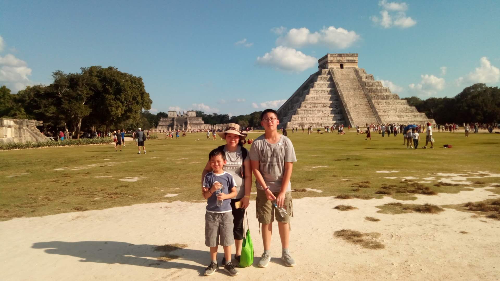
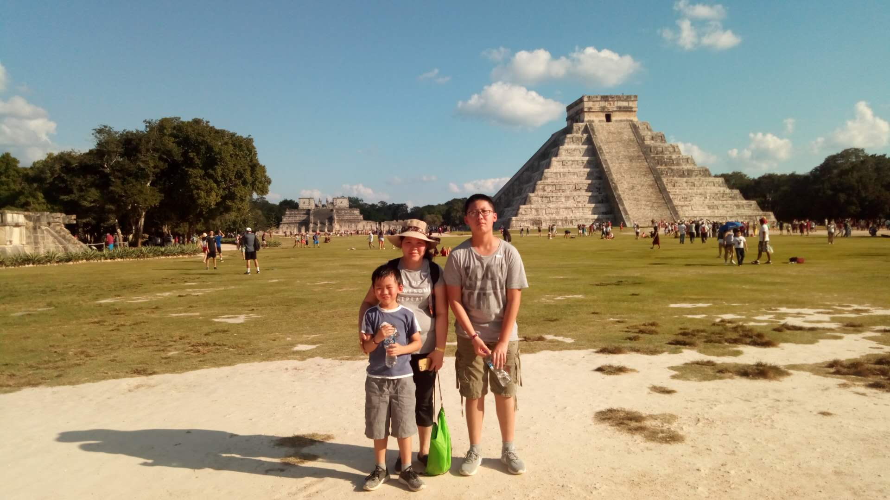
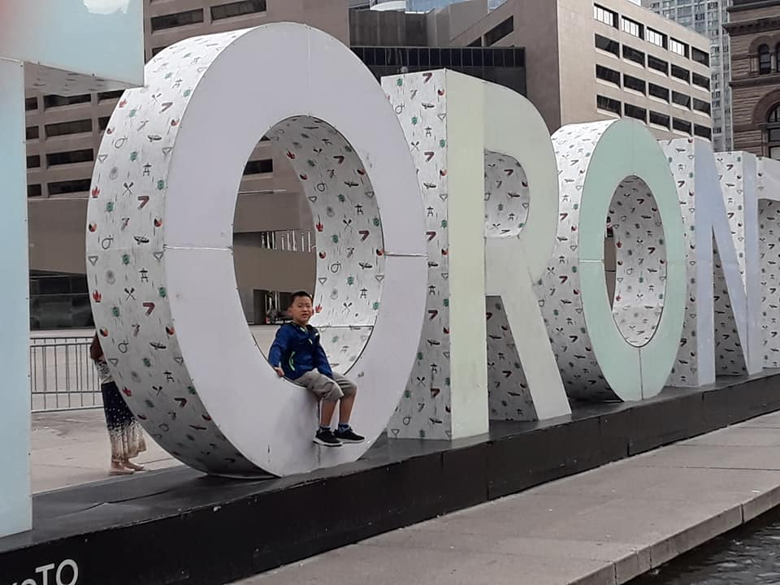
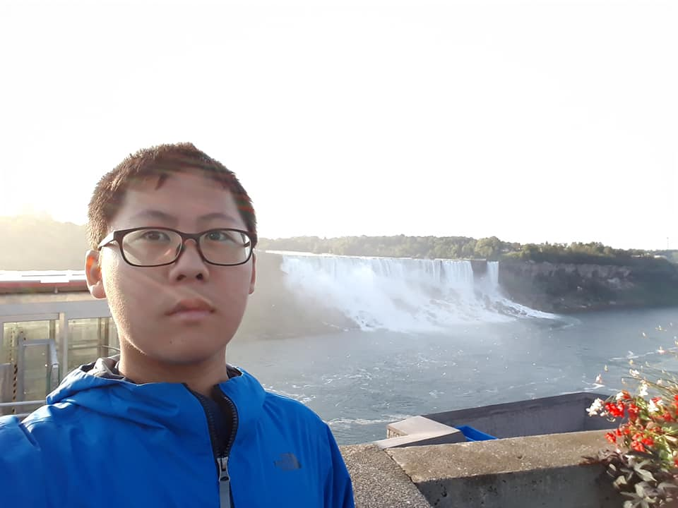
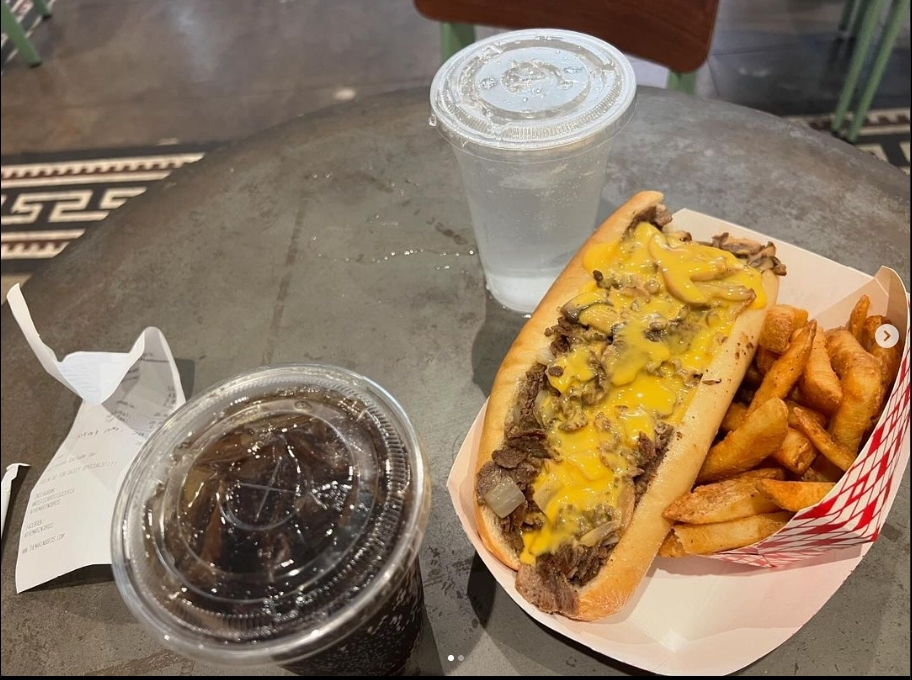

About Me
"Hello! I’m Jian Liang, but I like to be called Calvin. At 21 years old, I dedicated a lot of my time to JROTC during my high school days."
I have traveled to the following cities:
- San Francisco
- Cancun, Mexico
- Toronto, Canada
- New York
- Philadelphia
- Virginia
- Pennsylvania
- Washington D.C.
- Chicago Route 66
If you haven't guessed yet, I love to travel.
Photos
San Francisco
Cancun, Mexico
 

Toronto, Canada
 New York
Philadelphia
Do you think my cheesesteak looks good?
Washington D.C.


Chicago Route 66
I have many more photos I want to share. But I'm shy. How about following me on Instagram: immmbusyy for more photos from my travels.
Songs
Here are a few of my favorite songs:
Always - Relaxing music
River Flows in You - Chill music for relaxation